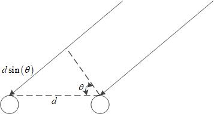
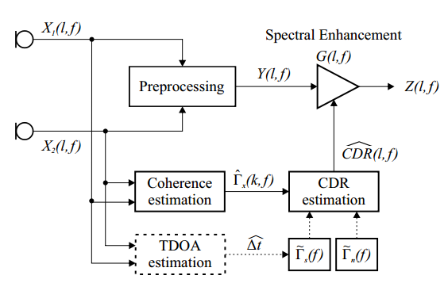

CDR/DDR定义:coherent-to-diffuse power ratio/direct-to-diffuse ratio
本论文的基本原理是基于直达信号，和混响信号的空间相干系数不同来估计直达信号和混响信号的功率比。再根据这个功率比在频域上每个k计算一个系数。最后频域上的信号依次乘以这个系数得到了最终的去混响信号。
估计信号+混响噪声总的空间相干系数（至少要2个麦克风才能获得空间相干系数）
估计TDOA（前置模块估计，根据不同算法可能也不需要）
根据麦克风距离，TDOA估计信号的空间相干系数，估计噪声的空间相干系数（根据选取的算法两个相干系数不一定都要估计，但至少要1个）
根据算法选取相干系数估计CDR
合并两个麦克风的信号（前处理）
根据CDR计算后置增益
前处理后的信号与后置增益相乘
至少要2个麦克风，才能获得空间的相干系数
超过2个麦克风怎么合并（前处理），也不清楚
计算简单，与FD-NDLP算法相比没有复杂的矩阵乘法和矩阵求逆
模型性能评估更加复杂，之前的FD-NDLP基于倒谱距离，这篇论文又比较了其他的，感觉去混响性能衡量标准不统一。本论文中比较了不同算法的识别概率、PESQ、fwSegSNR、ELR50ms、fwSegSNR50ms这些定义都来源于不同的文献，还没来得及研究。
加的混响需要满足各向同性的假设，否则不同算法的损失不一样
推荐用Proposed 2算法/Proposed 3算法，2性能最好，3更鲁棒。
P2算法：在高CDR(SNR)下对TDOA的偏差（信号相干系数偏差）敏感，但高SNR时TDOA应该能估计较准；高CDR下对噪声相干系数偏差不敏感；低CDR下对信号相干系数偏差的敏感度仅次于P3算法；低CDR下对噪声相干系数偏差最不敏感（最好）
P3算法：对信号相干系数偏差完全不敏感，不需要估计TDOA；唯一缺点是在低CDR下对噪声相干系数偏差比较敏感。
最后一步频域上的信号乘以1个增益系数可以去混响的原理没有太明白
两个麦克风的信号时域模型如下：x i ( t ) = s i ( t ) + n i ( t ) , i = 1 , 2 . x_{i}(t)=s_{i}(t)+n_{i}(t),i=1,2. x i ( t ) = s i ( t ) + n i ( t ) , i = 1 , 2 . 其中n i ( t ) n_{i}(t) n i ( t ) l l l Φ s 1 s 1 ( l , f ) = Φ s 2 s 2 ( l , f ) = Φ s ( l , f ) \Phi_{s1s1}(l,f)=\Phi_{s2s2}(l,f)=\Phi_s(l,f) Φ s 1 s 1 ( l , f ) = Φ s 2 s 2 ( l , f ) = Φ s ( l , f ) Φ n 1 n 1 ( l , f ) = Φ n 2 n 2 ( l , f ) = Φ n ( l , f ) \Phi_{n1n1}(l,f)=\Phi_{n2n2}(l,f)=\Phi_n(l,f) Φ n 1 n 1 ( l , f ) = Φ n 2 n 2 ( l , f ) = Φ n ( l , f ) l l l C D R ( f ) = S N R ( f ) = Φ s ( f ) Φ n ( f ) CDR(f)=SNR(f)=\frac{\Phi_{s}(f)}{\Phi_{n}(f)} C D R ( f ) = S N R ( f ) = Φ n ( f ) Φ s ( f ) Γ s ( f ) = Φ s 1 s 2 ( f ) Φ s ( f ) , Γ n ( f ) = Φ n 1 n 2 ( f ) Φ n ( f ) \Gamma_{s}(f)=\frac{\Phi_{s1s2(f)}}{\Phi_{s}(f)},\Gamma_{n}(f)=\frac{\Phi_{n1n2}(f)}{\Phi_{n}(f)} Γ s ( f ) = Φ s ( f ) Φ s 1 s 2 ( f ) , Γ n ( f ) = Φ n ( f ) Φ n 1 n 2 ( f ) Φ x ( f ) = Φ s ( f ) + Φ n ( f ) \Phi_{x}(f)=\Phi_{s}(f)+\Phi_{n}(f) Φ x ( f ) = Φ s ( f ) + Φ n ( f ) Γ x ( f ) = C D R ( f ) Γ s ( f ) + Γ n ( f ) C D R ( f ) + 1 \Gamma_{x}(f)=\frac{CDR(f)\Gamma_{s}(f)+\Gamma_{n}(f)}{CDR(f)+1} Γ x ( f ) = C D R ( f ) + 1 C D R ( f ) Γ s ( f ) + Γ n ( f ) Γ x ( l , f ) = Γ s ( f ) + 1 C D R ( l , f ) + 1 ( Γ n ( f ) − Γ s ( f ) ) \Gamma_{x}(l,f)=\Gamma_{s}(f)+\frac{1}{CDR(l,f)+1}(\Gamma_{n}(f)-\Gamma_{s}(f)) Γ x ( l , f ) = Γ s ( f ) + C D R ( l , f ) + 1 1 ( Γ n ( f ) − Γ s ( f ) ) C D R = Γ n − Γ x Γ x − Γ s CDR=\frac{\Gamma_{n}-\Gamma_{x}}{\Gamma_{x}-\Gamma_{s}} C D R = Γ x − Γ s Γ n − Γ x Γ x \Gamma_{x} Γ x Γ s \Gamma_{s} Γ s Γ n \Gamma_{n} Γ n

Γ s ( f ) = Φ s 1 s 2 ( f ) Φ s ( f ) = e j 2 π d sin ( θ ) λ = e j 2 π f Δ t \Gamma_{s}(f)=\frac{\Phi_{s1s2}(f)}{\Phi_{s}(f)}=e^{j2\pi \frac{d\sin(\theta)}{\lambda} }=e^{j2\pi f\Delta t} Γ s ( f ) = Φ s ( f ) Φ s 1 s 2 ( f ) = e j 2 π λ d sin ( θ ) = e j 2 π f Δ t Δ t = d sin ( θ ) / c \Delta t=d\sin(\theta)/c Δ t = d sin ( θ ) / c λ = c / f \lambda=c/f λ = c / f c c c 另外Δ t \Delta t Δ t θ \theta θ 。
假设噪声(混响)是球状的各向同性(自由空间)，噪声相干系数如下：Γ n ( f ) = sin ( 2 π f d / c ) 2 π f d / c \Gamma_n(f)=\frac{\sin(2\pi fd/c)}{2\pi fd/c} Γ n ( f ) = 2 π f d / c sin ( 2 π f d / c ) Γ n ( f ) = J 0 ( 2 π f d / c ) \Gamma_n(f)=J_{0}(2\pi fd/c) Γ n ( f ) = J 0 ( 2 π f d / c ) 注意：两种假设下相干系数都是实数
基于自相关和互相关函数估计，首先用α \alpha α Φ ^ x i x j ( l , f ) = λ Φ ^ x i x j ( l − 1 , f ) + ( 1 − λ ) X i ( l , f ) X j ∗ ( l , f ) \widehat{\Phi}_{xixj}(l,f)=\lambda \widehat{\Phi}_{xixj}(l-1,f)+(1-\lambda)X_{i}(l,f)X_{j}^{*}(l,f) Φ x i x j ( l , f ) = λ Φ x i x j ( l − 1 , f ) + ( 1 − λ ) X i ( l , f ) X j ∗ ( l , f ) Γ ^ x ( l , f ) = Φ ^ x 1 x 2 ( l , f ) Φ ^ x 1 x 1 ( l , f ) Φ ^ x 2 x 2 ( l , f ) \widehat{\Gamma}_{x}(l,f)=\frac{\widehat{\Phi}_{x1x2}(l,f)}{\sqrt{\widehat{\Phi}_{x1x1}(l,f)\widehat{\Phi}_{x2x2}(l,f)}} Γ x ( l , f ) = Φ x 1 x 1 ( l , f ) Φ x 2 x 2 ( l , f ) Φ x 1 x 2 ( l , f ) C D R = Γ n − Γ x Γ x − Γ s CDR=\frac{\Gamma_{n}-\Gamma_{x}}{\Gamma_{x}-\Gamma_{s}} C D R = Γ x − Γ s Γ n − Γ x Γ x \Gamma_{x} Γ x
算法
公式
要求
是否无偏
Jeub
Γ n − ℜ { Γ s ∗ Γ x } ℜ { Γ s ∗ Γ x } − 1 \frac{\Gamma_{n}-\Re\{\Gamma_{s}^{*}\Gamma_{x}\}}{\Re\{\Gamma_{s}^{*}\Gamma_x\}-1} ℜ { Γ s ∗ Γ x } − 1 Γ n − ℜ { Γ s ∗ Γ x } Γ n , Γ s \Gamma_{n},\Gamma_s Γ n , Γ s no
Thiergart 1
ℜ { Γ n − Γ x Γ x − Γ s } \Re\{\frac{\Gamma_{n}-\Gamma_{x}}{\Gamma_{x}-\Gamma_{s}}\} ℜ { Γ x − Γ s Γ n − Γ x } Γ n , Γ s \Gamma_{n},\Gamma_{s} Γ n , Γ s yes
Proposed 1
ℜ { Γ s ∗ ( Γ n − Γ x ) } ℜ { Γ s ∗ Γ x } − 1 \frac{\Re\{\Gamma_{s}^{*}(\Gamma_{n}-\Gamma_{x})\}}{\Re\{\Gamma_{s}^{*}\Gamma_x\}-1} ℜ { Γ s ∗ Γ x } − 1 ℜ { Γ s ∗ ( Γ n − Γ x ) } Γ n , Γ s \Gamma_{n},\Gamma_{s} Γ n , Γ s yes
Proposed 2
1 − Γ n cos ( arg ( Γ s ) ) ∥ Γ n − Γ s ∥ ∥ Γ s ∗ ( Γ n − Γ x ) ℜ { Γ s ∗ Γ x − 1 } ∥ \frac{1-\Gamma_{n}\cos(\arg(\Gamma_s))}{\|\Gamma_{n}-\Gamma_{s}\|}\|\frac{\Gamma_{s}^{*}(\Gamma_{n}-\Gamma_{x})}{\Re\{\Gamma_{s}^{*}\Gamma_{x}-1\}} \| ∥ Γ n − Γ s ∥ 1 − Γ n cos ( arg ( Γ s ) ) ∥ ℜ { Γ s ∗ Γ x − 1 } Γ s ∗ ( Γ n − Γ x ) ∥ Γ n , Γ s \Gamma_{n},\Gamma_{s} Γ n , Γ s yes
Thiergart 2
ℜ { Γ n − Γ x Γ x − e j arg Γ x } \Re\{\frac{\Gamma_{n}-\Gamma_{x}}{\Gamma_{x}-e^{j\arg\Gamma_{x}}}\} ℜ { Γ x − e j arg Γ x Γ n − Γ x } Γ n \Gamma_{n} Γ n no
Proposed 3
Γ n ℜ { Γ x } − ∥ Γ x ∥ 2 − Γ n 2 ℜ { Γ x } 2 − Γ n 2 ∥ Γ x ∥ 2 + Γ n 2 − 2 Γ n ℜ { Γ x } + ∥ Γ x ∥ 2 ∥ Γ x 2 ∥ − 1 \frac{\Gamma_{n}\Re\{\Gamma_{x}\}-\|\Gamma_x\|^{2}-\sqrt{\Gamma_{n}^{2}\Re\{\Gamma_{x}\}^{2}-\Gamma_{n}^{2}\|\Gamma_{x}\|^{2}+\Gamma_{n}^{2}-2\Gamma_{n}\Re\{\Gamma_{x}\}+\|\Gamma_{x}\|^2}}{\|\Gamma_{x}^{2}\|-1} ∥ Γ x 2 ∥ − 1 Γ n ℜ { Γ x } − ∥ Γ x ∥ 2 − Γ n 2 ℜ { Γ x } 2 − Γ n 2 ∥ Γ x ∥ 2 + Γ n 2 − 2 Γ n ℜ { Γ x } + ∥ Γ x ∥ 2 Γ n \Gamma_n Γ n yes
Proposed 4
∞ i f , ℑ { Γ x } ℑ { Γ s } ≥ 1 ℑ { Γ x } ℑ { Γ s − Γ x } i f , 0 < ℑ { Γ x } ℑ { Γ s } < 1 0 i f , ℑ { Γ x } ℑ { Γ s } ≤ 0 \begin{matrix} \infty & if, \frac{\Im\{\Gamma_x\}}{\Im\{\Gamma_{s}\}}\geq1 \\ \frac{\Im\{\Gamma_{x}\}}{\Im\{\Gamma_{s}-\Gamma_x\}} & if, 0<\frac{\Im\{\Gamma_x\}}{\Im\{\Gamma_{s}\}}<1 \\ 0 & if, \frac{\Im\{\Gamma_x\}}{\Im\{\Gamma_{s}\}}\leq0 \end{matrix} ∞ ℑ { Γ s − Γ x } ℑ { Γ x } 0 i f , ℑ { Γ s } ℑ { Γ x } ≥ 1 i f , 0 < ℑ { Γ s } ℑ { Γ x } < 1 i f , ℑ { Γ s } ℑ { Γ x } ≤ 0 Γ s \Gamma_s Γ s yes
Jeub算法 Γ x \Gamma_x Γ x e − j 2 π f Δ t ^ = Γ s ∗ e^{-j2\pi f\widehat{\Delta t}}=\Gamma_{s}^* e − j 2 π f Δ t = Γ s ∗ Γ s = 1 ⇔ Δ t ^ = 0 \Gamma_{s}=1\Leftrightarrow \widehat{\Delta t}=0 Γ s = 1 ⇔ Δ t = 0
Thiergart 1 C D R = Γ n − Γ x Γ x − Γ s CDR=\frac{\Gamma_{n}-\Gamma_{x}}{\Gamma_{x}-\Gamma_{s}} C D R = Γ x − Γ s Γ n − Γ x Γ x \Gamma_x Γ x Γ s \Gamma_s Γ s
Proposed 1
Proposed 2 C D R p r o 2 = ∣ Γ s ∗ ( Γ n − Γ x ) ℜ { Γ s ∗ Γ x } − 1 ∣ CDR_{pro2}=|\frac{\Gamma_{s}^{*}(\Gamma_{n}-\Gamma_{x})}{\Re\{\Gamma_{s}^{*}\Gamma_{x}\}-1}| C D R p r o 2 = ∣ ℜ { Γ s ∗ Γ x } − 1 Γ s ∗ ( Γ n − Γ x ) ∣
Thiergart 2 Γ s \Gamma_s Γ s Γ s \Gamma_s Γ s Φ ^ x 1 x 2 \widehat{\Phi}_{x1x2} Φ x 1 x 2 Γ s = e j arg Φ ^ x 1 x 2 = e j arg Γ x \Gamma_{s}=e^{j\arg\widehat{\Phi}_{x1x2}}=e^{j\arg\Gamma_{x}} Γ s = e j arg Φ x 1 x 2 = e j arg Γ x Γ x \Gamma_x Γ x θ ≠ 0 ∘ \theta\ne0^\circ θ ≠ 0 ∘ Γ s \Gamma_{s} Γ s
Proposed 3 Γ s \Gamma_s Γ s C D R = Γ n − Γ x Γ x − Γ s ⇒ Γ s = Γ x − Γ n − Γ x C D R CDR=\frac{\Gamma_{n}-\Gamma_{x}}{\Gamma_{x}-\Gamma_{s}}\Rightarrow \Gamma_{s}=\Gamma_{x}-\frac{\Gamma_{n}-\Gamma_x}{CDR} C D R = Γ x − Γ s Γ n − Γ x ⇒ Γ s = Γ x − C D R Γ n − Γ x Γ s \Gamma_s Γ s ∣ Γ s ∣ = 1 ⇒ ( ∣ Γ x ∣ 2 − 1 ) C D R 2 − 2 ℜ { Γ x ( Γ n − Γ x ) ∗ } C D R + ∣ Γ n − Γ x ∣ 2 = 0 |\Gamma_{s}|=1\Rightarrow (|\Gamma_x|^{2}-1)CDR^{2}-2\Re\{\Gamma_{x}(\Gamma_{n}-\Gamma_{x})^{*}\}CDR+|\Gamma_{n}-\Gamma_{x}|^{2}=0 ∣ Γ s ∣ = 1 ⇒ ( ∣ Γ x ∣ 2 − 1 ) C D R 2 − 2 ℜ { Γ x ( Γ n − Γ x ) ∗ } C D R + ∣ Γ n − Γ x ∣ 2 = 0
Proposed 4 ℑ { Γ n } = 0 \Im\{\Gamma_{n}\}=0 ℑ { Γ n } = 0 C D R = Γ n − Γ x Γ x − Γ s ⇒ ℑ { Γ n } = ℑ { Γ x + C D R ( Γ x − Γ s ) } = 0 CDR=\frac{\Gamma_{n}-\Gamma_{x}}{\Gamma_{x}-\Gamma_{s}}\Rightarrow\Im\{\Gamma_{n}\}=\Im\{\Gamma_{x}+CDR(\Gamma_{x}-\Gamma_{s})\}=0 C D R = Γ x − Γ s Γ n − Γ x ⇒ ℑ { Γ n } = ℑ { Γ x + C D R ( Γ x − Γ s ) } = 0 C D R = ℑ { Γ x } ℑ { Γ s − Γ x } CDR=\frac{\Im\{\Gamma_{x}\}}{\Im\{\Gamma_{s}-\Gamma_x\}} C D R = ℑ { Γ s − Γ x } ℑ { Γ x } Γ s ≠ 0 \Gamma_s\ne0 Γ s ≠ 0
语音增强框图如下：

麦克风信号合并（前处理）如下：Y ( l , f ) = 1 2 ∣ X 1 ( l , f ) ∣ 2 + ∣ X 2 ( l , f ) ∣ 2 ⋅ e j arg X 1 ( l , f ) Y(l,f)=\frac{1}{2}\sqrt{|X_{1}(l,f)|^{2}+|X_{2}(l,f)|^2}\cdot e^{j\arg X_{1}(l,f)} Y ( l , f ) = 2 1 ∣ X 1 ( l , f ) ∣ 2 + ∣ X 2 ( l , f ) ∣ 2 ⋅ e j arg X 1 ( l , f )
后置增益如下：G ( l , f ) = max { G min , 1 − μ C D R ^ ( l , f ) + 1 } G(l,f)=\max\{G_{\min},1-\sqrt{\frac{\mu}{\widehat{CDR}(l,f)+1}} \} G ( l , f ) = max { G min , 1 − C D R ( l , f ) + 1 μ } Z ( l , f ) = G ( l , f ) Y ( l , f ) Z(l,f)=G(l,f)Y(l,f) Z ( l , f ) = G ( l , f ) Y ( l , f ) μ \mu μ G min G_{\min} G min